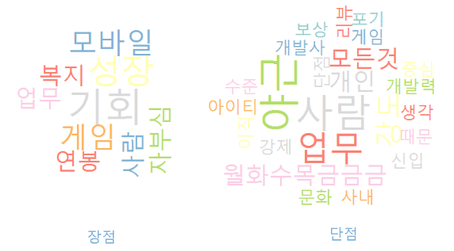
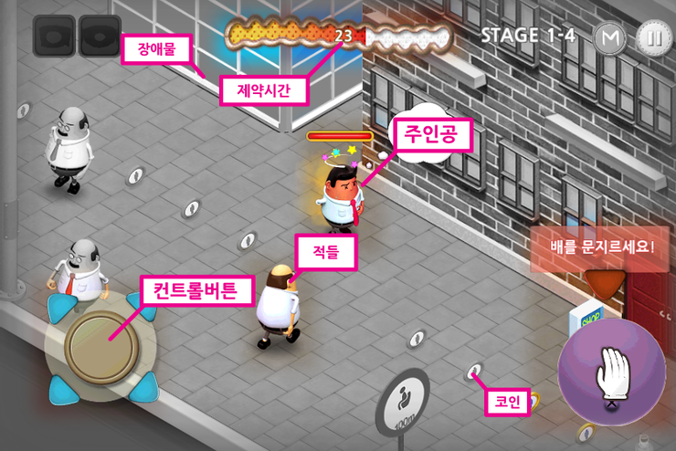
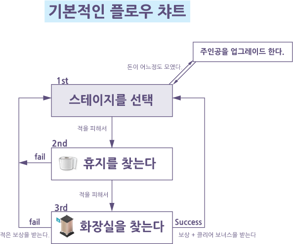
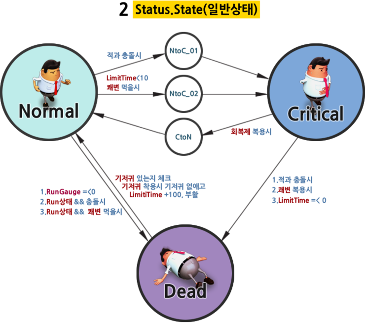
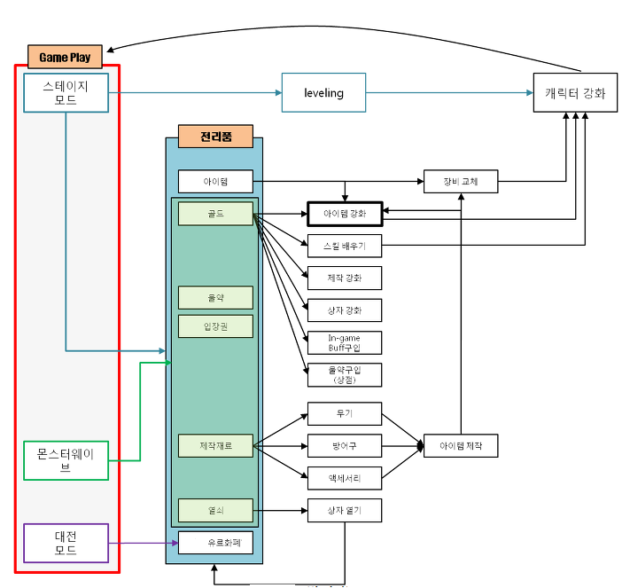

01 · WHAT IS A GAME?
게임은
욕구를
움직인다

사람의 욕구가 규칙을 만나
선택과 결과를 반복하는 경험
욕구가 플레이를 만나
재미가 됩니다
기능이 많아서가 아니라
행동과 결과가 욕구를 움직일 때 게임이 됩니다.
사용자 욕구해보고 싶다
게임 플레이선택하고 행동한다
욕구 충족성취하고 다시 원한다
화면은 기능 목록이 아니라
관계도입니다
주인공·적·장애물·시간·조작·보상이
서로 어떤 행동을 만드는지 읽습니다.

보이는 화면 뒤에는
세 개의 구조가 있습니다
장면의 순서, 캐릭터 상태, 시스템 연결을
한 장씩 따라가면 게임이 작동하는 방식이 보입니다.



개발자는 규칙에서 시작하고
플레이어는 경험으로 판단합니다
규칙이 행동을 만들고, 행동이 경험을 만듭니다.
좋은 기획은 이 연결을 거꾸로 검증합니다.
MECHANICS규칙입력 · 수치 · 조건
DYNAMICS행동선택 · 전략 · 반복
AESTHETICS경험긴장 · 성취 · 몰입
VERIFY역검증원한 감정이 실제로 생겼는가
게임의 기본 구조는
하나의 순환입니다
규칙이 행동을 정하고, 동기가 행동을 지속시키며,
보상이 다음 행동을 부릅니다.
규칙→동기→보상